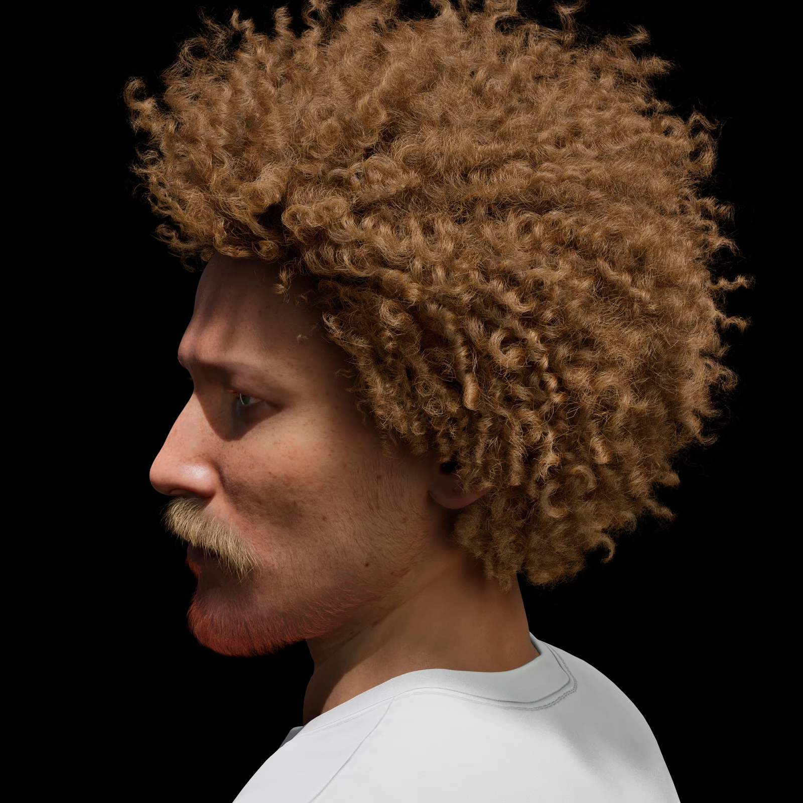
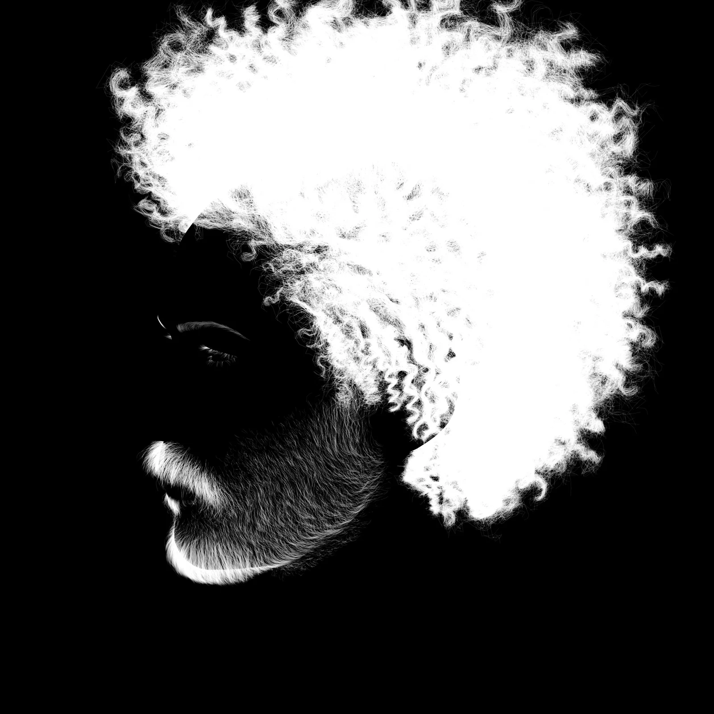
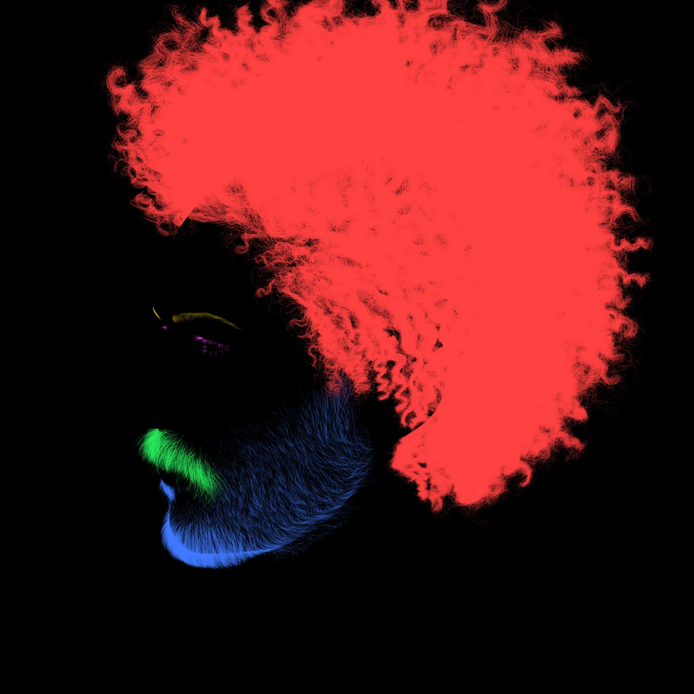
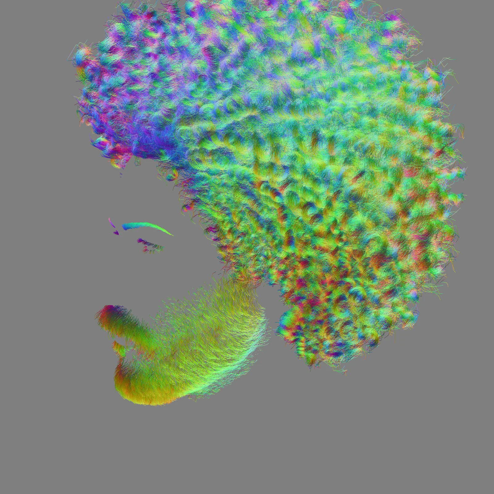
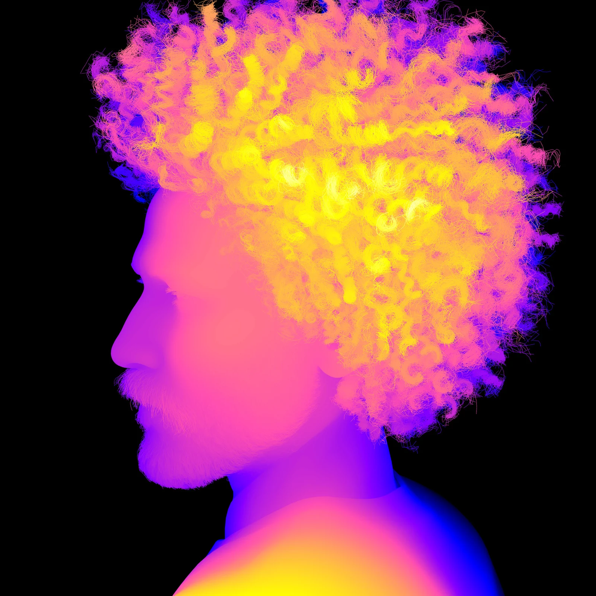

Four labels for every 4K portrait
Every SynthHair portrait is rendered at 4096 × 4096 and comes with four types of labels: hair matte, hair category, growth direction and depth. Hover a label to open its slice.





-
ImageRendered MetaHuman portrait, RGBA.
-
Hair matteSoft alpha matte of all hair, not a binary mask.
-
Hair categoryScalp · eyebrows · eyelashes · mustache · beard.
-
Growth direction3D strand direction, root to tip.
-
DepthDense per-pixel depth, including hair.
- 16,000
- portraits at 4096 × 4096
- 43
- MetaHuman identities, disjoint train / test
- 5
- hair categories with soft mattes
- 4
- types of labels: hair matte, category, growth direction & depth
Predictions on AI-generated portraits
The same model architecture trained on four different datasets, applied to 4K AI-generated portraits. Drag the divider to compare, or switch to all models to zoom into the mattes side by side.
Image
Prediction
AI-generated image · 4096 × 3072
This research uses pre-existing third-party academic image datasets that may contain personal data (such as faces). Please see our Privacy Notice for details on how personal data is processed, retained, and how to request erasure.